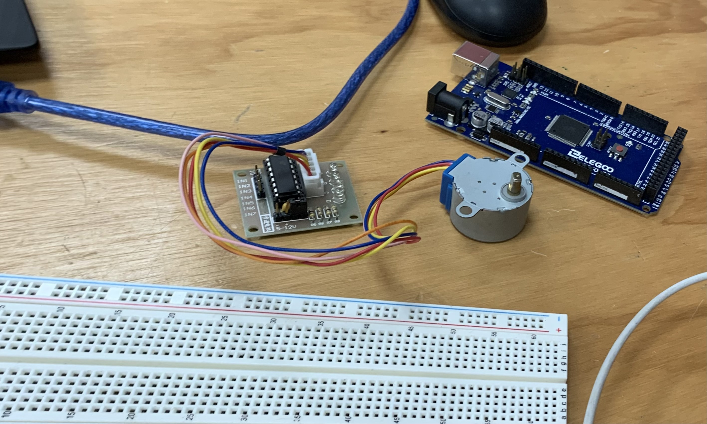

Bitácora
Acá registraré el progreso de mis clases.
Bienvenidos a este espacio donde vamos a compartir el registro de actividades y notas importantes sobre la clase de los lunes virtuales y los viernes en el salón.
Semana 1
Lunes Virtual: Como primera clase tuvimos la presentación a los compañeros y al profesor que nos va a orientar el resto de ciclo Además, recibimos una introducción detallada introducción al curso de Lab 2, que promete desafíos estimulantes y aprendizaje práctico. El profesor nos brindó una visión general del contenido del curso, destacando los temas que desarrollaremos. Desde el primer momento, el profesor nos mostró el compromiso que tiene por brindarnos una experiencia educativa enriquecedora y relevante.
Viernes Presencial: La segunda clase fue donde por fin llegamos al laboratorio y pudimos vernos en persona y como primera actividad tuvimos que hacer un grupo de 3 integrantes una oportunidad perfecta para conocernos mejor y colaborar en equipo. donde íbamos a plantear una problemática como prueba para lo que sería el curso el resto del ciclo, Esta actividad nos permitió no solo aplicar los conocimientos teóricos adquiridos en clase, sino también desarrollar habilidades de trabajo en equipo, comunicación y resolución de problemas.
Semana 2
Lunes Virtual: Partimos de habernos conocido para recién formar los grupos para el resto de ciclo y elegir bien nuestra problemática como grupo y hacer la actividad de investigación junto a la selección de la ODS, la que nosotros elegimos fue la ODS 4, Educación de Calidad, fueron los primeros pasos de nuestro proyecto que se va formando desde investigar el problema que en este caso fue la baja calidad de estudios en los colegios nacionales de primaria en lima.
Viernes Presencial: Fue semana santa y no hubo clases.
Semana 3
Lunes Virtual: Nuestra primera tarea fue descargar GitHub y Visual Studio Code para comenzar a familiarizarnos con estas herramientas fundamentales en el desarrollo web. Fue emocionante explorar estas plataformas y empezar a comprender cómo pueden facilitar nuestro trabajo en la creación de sitios web dinámicos y atractivos. Una vez que tuvimos las herramientas listas, el profesor nos guió a través del proceso de obtener una plantilla básica y los recursos web necesarios para empezar a construir nuestra página. Fue una experiencia algo complicada de aplicar, ya que pudimos ver en tiempo real cómo se aplican los conceptos teóricos que estábamos aprendiendo.
Viernes Presencial: Aquí llevamos nuestras laptops o algunos hicieron prestamos de laptops para terminar de configurar la página web recibir ayuda ya que muchos teníamos problemas con que se pueda visualizar y sobre todo con el error masivo que nos salió a todos con las credenciales.
Semana 4
Lunes Virtual: Reforzamos de nuevo en el visual studio ya que no podíamos seguir con la página web y algunos compañeros mostraban problemas con la programación y en un segmento rápido se vió como colocar las imágenes en el github, para nuestro proyecto de clase tuvimos que realizar las encuestas por el formulario y las entrevistas a personas, en nuestro caso decidimos hacerla a padres de familia y profesores de acuerdo a nuestra problemática que es la falta de materiales educativos en los colegios del estado.
Viernes Presencial: Yo llegué ya sabiendo como poner las imágenes en la página web solo poniendo el link, se sugiere que pongamos las imágenes ya con nuestras medidas para evitar confusiones, enviamos nuestras evidencias de entrevistas y formularios ya que el siguiente lunes se presentará el trabajo final de promedio 1 .
Semana 5
Lunes Virtual: Expusimos nuestro trabajo en la clase, llegamos a las conclusiones de que la problemática que hemos elegido para trabajar es un problema muy real dentro de las escuelas del estado que no son apoyadas con los materiales suficientes para fortalecer la educación dentro de las clases.
Viernes Presencial: Presentación de nuestra página web, espero que le guste al profesor.
Semana 6
Lunes Virtual: Empezamos el segundo promedio del ciclo,introduciendo el modelado 3D para aprender junto con un plano indicando las medidas exactas para poder realizar el plano de la cámara.
La impresión 3D está expandiendo y evolucionando rápidamente. Hay un constante desarrollo de impresoras 3D y materiales de impresión. Las impresoras 3D se han expandido con éxito desde la esfera profesional al mundo del aficionado/maker
Viernes Presencial: Se entregaba la cámara ya elaborada pero como no muchos entendieron se volvió a hacer en la clase paso por paso para que aprendamos y se nos quede grabado en la memoria, despúes el profesor nos dió la actividad grupal para empezar a dar las propuestas en bocetos del proyecto que estamos realizando en este caso el del grupo 2 es el juego de mesa Yachani.
Semana 7
Lunes Virtual: Se presentaba en clase todos los bocetos dándonos una idea de como sería el prototipo ideal para nuestra propuesta, cada integrante debía hacer 5 por grupo pero terminamos bajandolo a 4 y se exponía el día viernes ya con la ruta del usuario y como se vería.
Viernes Presencial: Presentación de las propuestas ya detalladas junto con el costumer joruney map que en nuestro caso tuvimos dos experiencias de usuario que fueron las del profesor y el niño, y hicimos la tabla de validación del prototipo de baja fidelidad.
Semana 8
Lunes Virtual: Vimos la clase de electronica presentándonos ya el arduino para hacer memoria sobre la programación conociendo algunos de sus componentes.
Viernes Presencial: Empezamos a realizar el prototipo de baja fidelidad en cartones armando nuestra máqueta del juego.
Semana 9
Lunes Virtual: Vimos sobre El pseudocódigo o Diagráma de Flujo que es una forma de expresar los distintos pasos que va a realizar un programa, de la forma más parecida a un lenguaje de programación. Su principal función es la de representar por pasos la solución a un problema o algoritmo, de la forma más detallada posible, utilizando un lenguaje cercano al de programación.

Viernes Presencial:Hoy finalmente probamos un Arduino real con un motor giratorio para comenzar a programar nuestro juego. Desafortunadamente, no funcionó como esperábamos. Durante toda la sesión, estuvimos dedicados a hacer que el código coincidiera correctamente con la aplicación que se conecta a la placa del Arduino mediante un cable USB. Fue un desafío asegurarnos de que todos los componentes estuvieran configurados correctamente y que el código estuviera bien escrito para controlar el motor. A pesar de los contratiempos, este tipo de experiencia es invaluable para aprender y entender mejor cómo interactúan el hardware y el software.
Semana 10
Lunes Virtual: Abrimos tinkerkat para probar prender luces led mediante códigos programados con comandos para poder encender el led y hacerlo parpadear.
Viernes Presencial: Presentación de la página web del proyecto y final del promedio 2.
Semana 11
Lunes Virtual: Hoy profundizamos en el Internet de las Cosas (IoT). Aprendimos cómo los dispositivos conectados pueden comunicarse entre sí y con nosotros a través de internet, facilitando la automatización y el control remoto de diversos sistemas. Vimos ejemplos prácticos de cómo se pueden usar sensores y actuadores para recopilar datos y ejecutar acciones específicas. También discutimos las aplicaciones del IoT en diferentes campos, como la domótica, la salud, la agricultura y las ciudades inteligentes. Esta comprensión nos ayudará a aprovechar mejor las capacidades del Arduino y otros dispositivos en nuestros futuros proyectos.
Viernes Presencial: Presentación de la página web del proyecto y final del promedio 2.
Semana 12
Lunes Virtual:En esta sesión sobre el concepto del escaneo 3D y la impresión 3D. Vimos cómo los escáneres 3D capturan la forma y los detalles de objetos físicos para crear modelos digitales. Exploramos el proceso de escaneo, que incluye la preparación del objeto, la configuración del escáner y la captura de datos. Luego discutimos cómo estos modelos digitales pueden ser utilizados en la impresión 3D, transformando los diseños virtuales en objetos físicos mediante impresoras 3D. Aprendimos sobre las diferentes tecnologías de impresión 3D, los materiales que se pueden utilizar y las aplicaciones prácticas en áreas como la fabricación, el diseño, la medicina y la educación. Este conocimiento nos permitirá integrar mejor estas tecnologías en nuestros proyectos futuros.
Viernes Presencial: Hoy realizamos un escaneo 3D. Aprendimos a utilizar un escáner 3D para capturar imágenes detalladas de objetos y convertirlas en modelos digitales. Exploramos cómo preparar el objeto para el escaneo, ajustamos los parámetros del escáner para obtener la mejor resolución posible y procesamos los datos escaneados para crear un modelo 3D preciso.
Semana 13
Lunes Virtual:En esta clase aprendimos sobre la complejidad y la utilidad tanto de la realidad virtual (RV) como de la realidad aumentada (RA). La realidad virtual crea entornos digitales inmersivos mediante dispositivos como gafas y guantes hápticos, utilizados en entretenimiento, educación, salud, arquitectura y turismo virtual. Por otro lado, la realidad aumentada superpone elementos digitales sobre el mundo real mediante dispositivos como smartphones y gafas AR, empleados en juegos, educación, marketing, industria y medicina. Ambas tecnologías han revolucionado diversas industrias, proporcionando nuevas formas de interacción y aprendizaje mediante experiencias sensoriales innovadoras.
Viernes Presencial:Hoy realizamos el análisis del guion de nuestro teaser para el juego "Yachani", dirigido a niños peruanos. Discutimos los elementos clave del guion, asegurándonos de que capturara la esencia cultural y educativa que queremos transmitir.
Semana 14
Lunes Virtual: El grupo y yo pensamos en como vamos a organizar la presentación de nuestro proyecto tanto como el video y teaser.
Viernes Presencial: Se realizó la compra de los materiales que nos van a servir para lograr llevar a cabo nuestro proyecto como el arduino y el filamento 3D.
Semana 15
Lunes Virtual: Hoy el profesor nos proporcionó un listado detallado de todos los entregables necesarios para el proyecto final. Durante la sesión, surgieron problemas con la plataforma que estábamos utilizando, lo que generó dificultades para acceder.
Viernes Presencial: última clase Presencial para terminar el proyecto en el que estamos trabajando desde que empezó el ciclo donde se imprimió el modelado en 3D.
Semana 16
Lunes Virtual:Exposición virtual sobre esta página web.
Viernes Presencial: Ójala aprobar manifestamos.